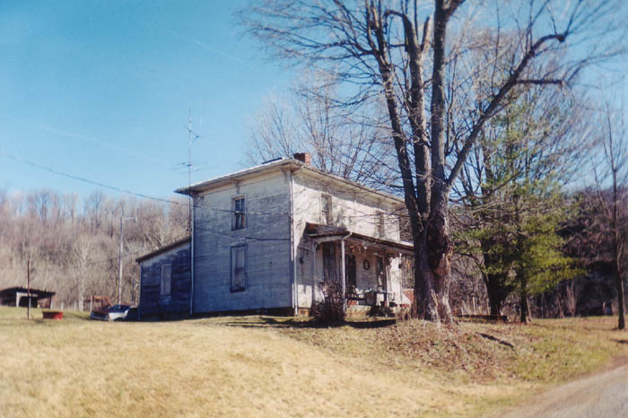
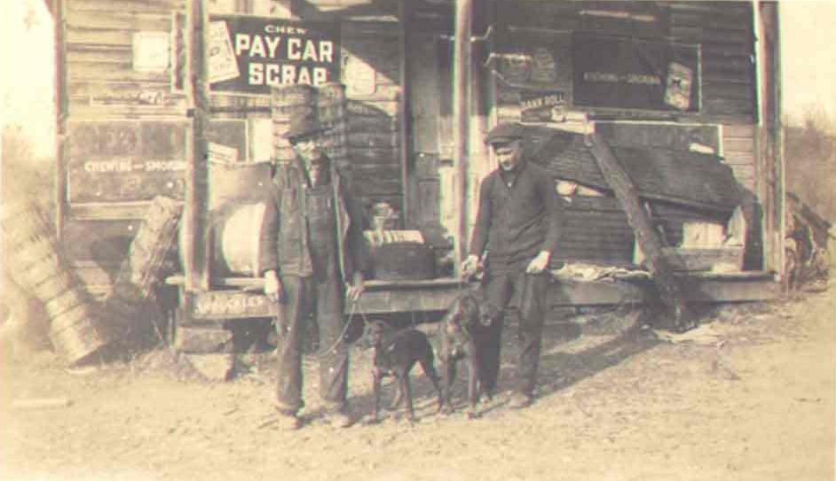
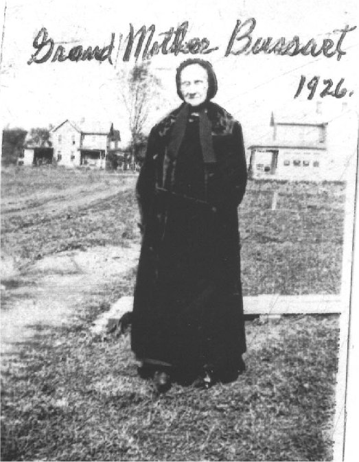
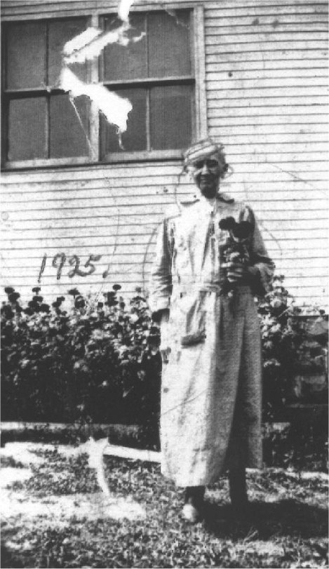
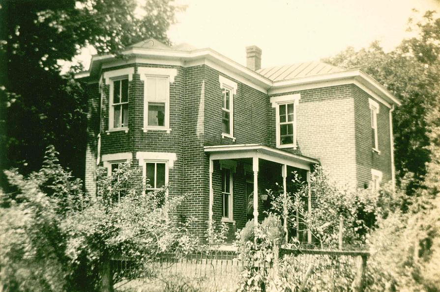
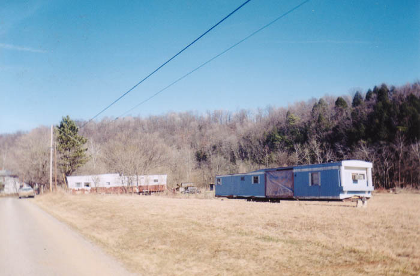
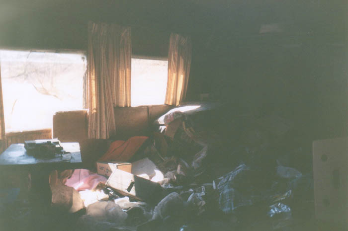
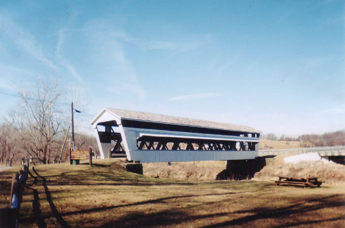

Revenge, Ohio - Best Served Cold
What a name for a town. Revenge doesn't technically exist anymore, except for on a few old maps and state atlases, but for a while this oddly-named hamlet occupied a corner of Madison Township in southwestern Fairfield County, at the place where Clear Creek intersects the much smaller Middle Fork Creek. Today there's not much to tell you that a town ever existed here.

Revenge was a farm town, and its only major business was the general store, where local farmers could buy feed, small equipment, and other essentials. The general store still stands at the intersection of Clear Creek and Revenge Roads, but today it's a private residence. Some of my only information about the town comes from talking to the couple who occupied the house in 2001.

Above you see an old photograph taken in front of the grocery store in Revenge. I am not sure if this is the same building pictured in the previous photo. One of the men pictured is Lloyd Hartman, whose uncle Ray Bussert owned the store. The Hartmans in Revenge were somehow related to the Samuel Brubaker Hartman family which owned the Peruna empire and the Hartman Hotel.


These photos show members of the Bussert family. The picture on the left was taken in 1926, the one on the right in 1925.

This slightly older photo (taken in the 1800s, according to the contributor) shows the home of the Kocher family, who were responsible for the wonderful name of the town, which is far and away the best I've ever heard. Beautifully vicious. I was hoping the origin of the name involved a murder or something interesting like that, but as it turns out it was the "outcome of a competition" between two local storekeepers named Bay and Kocher. George T. Kocher was the winner, so for his revenge he named the town Revenge. The book I read this in doesn't say what the competition was. Another story, sent to me by a woman whose grandparents lived in the town, says that it came about because Ray Bussart opened his grocery store there after a feud with the Hartmans, whose family store was located in Amanda.
In a probably-irrelevent side note, I happen to be friends with a beautiful girl named Jamie Kocher (it's pronounced "ko-er") who is originally from Belmont County. Who knows if she's related? Genealogy is not my field, folks.

A couple of abandoned trailer homes are littered in a field near the old store. I poked around in one and found it smelly and full of old clothes and stuff.

Another Revenge landmark is the Johnson Covered Bridge, which is just north of town. Today it's been moved aside in favor of an ordinary highway bridge. Restored and placed in a small park nearby, you can now walk through it without being hit by cars. You might also see the ghost of a woman who has been with the bridge since the days when it spanned Clear Creek; click here to read more about the ghost story.

I don't have much more information about Revenge. A few helpful descendents of the Kochers and Bussert/Hartmans sent me the older photos and explained a lot about the families who lived there, which was very helpful. I'll add more as I get it. In the meantime, if you're interested in visiting a pissed-off-sounding ghost town, head southwest out of Lancaster and look for the old general store.

Back
Sources
Goslin, Charles R. Crossroads and Fence Corners: Historical Lore of Fairfield County. Lancaster: Fairfield County Heritage Association, 1976. {kind=link}
{kind=link}
{kind=link}
{kind=link}
{kind=link}
{kind=link}
{kind=link}
{kind=link}